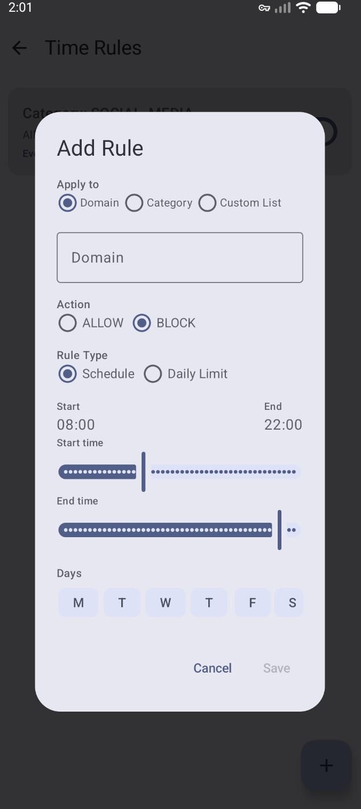
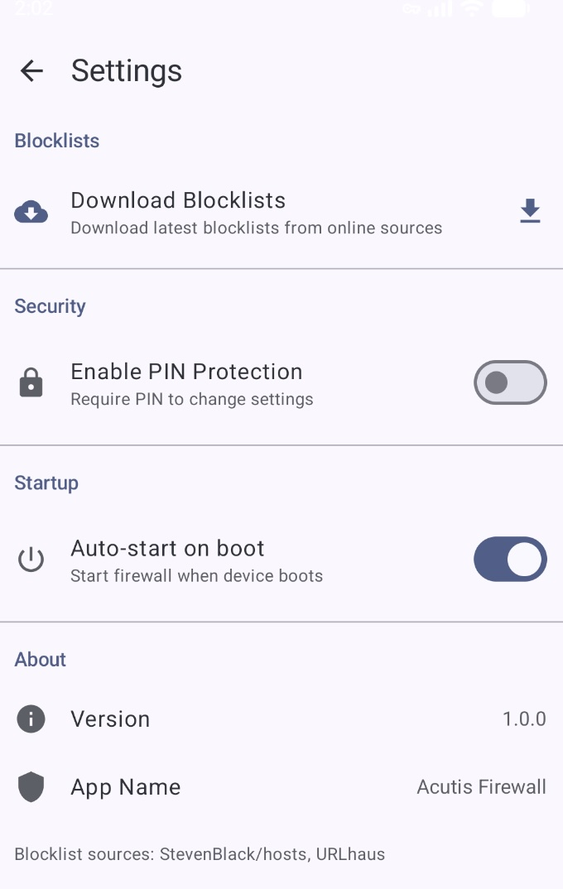
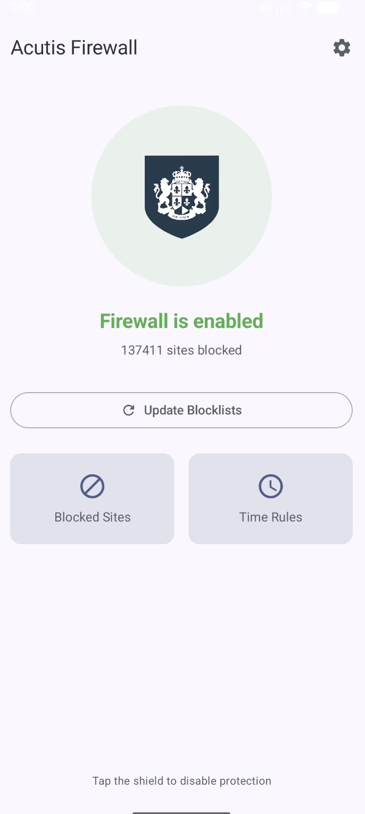

Por dentro
Pensada para padres, no para empresas
Una interfaz clara y directa, centrada en lo importante: que los niños estén seguros en internet.



Bloquea contenido adulto, malware y apuestas en todas las apps — no solo en el navegador —, pon límites de tiempo diarios y protege los ajustes con un PIN. Todo el filtrado ocurre en tu teléfono: sin cuenta, sin anuncios y sin rastreo.

Protección potente y privada que funciona en segundo plano. Se configura una vez y hace el trabajo.
Bloquea contenido adulto, malware, sitios de phishing, apuestas y redes sociales. Funciona en todas las apps, no solo en el navegador.
Pon límites diarios de uso y programa bloqueos en las horas de deberes, de dormir o de estar en familia.
Protege los ajustes con un PIN para que los niños no puedan desactivar la protección ni cambiar la configuración.
Todo el filtrado ocurre en el teléfono. Sin recogida de datos, sin servidores externos y sin rastreo.
El filtrado cubre todas las apps del teléfono, no solo el navegador. Se activa con un toque y arranca solo al encender.
Sin suscripción, sin anuncios y sin compras dentro de la app. Protección completa sin coste.
Una interfaz clara y directa, centrada en lo importante: que los niños estén seguros en internet.


Guías paso a paso para las dudas que de verdad tienen los padres.
Tres formas de filtrar el teléfono de un niño, qué se le escapa a cada una y cómo montar un filtro gratis en cinco minutos.
Bloquea la app y youtube.com, o permítelos solo a ciertas horas. Sin root y sin cuenta de Google.
Por qué el filtrado DNS cubre todas las apps, en qué se diferencia un filtro local de la DNS privada y cuál conviene usar.
Qué hace bien Family Link, dónde no encaja y qué hace en su lugar un filtro en el propio móvil.
A diferencia de otras apps de control parental, Acutis Firewall nunca envía tus datos a ningún sitio. Todo se queda en el dispositivo.
Lo que preguntan los padres antes de instalarla en el teléfono de un niño.
Sí. Es código abierto con licencia MIT, sin anuncios, sin suscripción, sin compras dentro de la app y sin cuenta. Las donaciones son opcionales y pagan dispositivos de prueba, el alojamiento de las listas y el trabajo de mantener la app funcionando en las nuevas versiones de Android.
No. Usa la API VpnService de Android para filtrar el DNS en el propio móvil, en Android 10 o superior. Sin root, sin ROM personalizada y sin ordenador.
La protección contra desinstalación opcional registra la app como administrador del dispositivo: bloquea desinstalar, forzar la detención y borrar los datos, y desactivarla pide el PIN. Android sigue permitiendo desactivar un administrador desde Ajustes, y la app te avisa cuando ocurre. El modo Device Owner es la única opción realmente imposible de quitar. Lo explicamos en protección contra desinstalación.
No. Solo el tráfico DNS hacia 8.8.8.8 y 8.8.4.4 pasa por el túnel local; el resto de conexiones lo esquiva por completo. No hay proxy ni servidor remoto en medio.
No. No hay analítica ni servidor del desarrollador. Las consultas DNS se responden en el dispositivo y las listas se descargan de listas públicas de GitHub y GitLab. Nada de la navegación de tus hijos sale del móvil. La política de privacidad está en inglés.
Acutis Firewall no tiene anuncios, ni cuentas, ni versión de pago. Las donaciones pagan dispositivos de prueba, el alojamiento de las listas y el tiempo de mantener la app funcionando en las nuevas versiones de Android.
bc1q….Solo Bitcoin mainnet. Instrucciones completas (en inglés).
bc1q408lpl7etcfwdvuxh84wvcwc6gvzwdktu2quce
Instala Acutis Firewall en menos de un minuto. Sin cuenta, sin tarjeta y sin trampa.
Descargar para Android